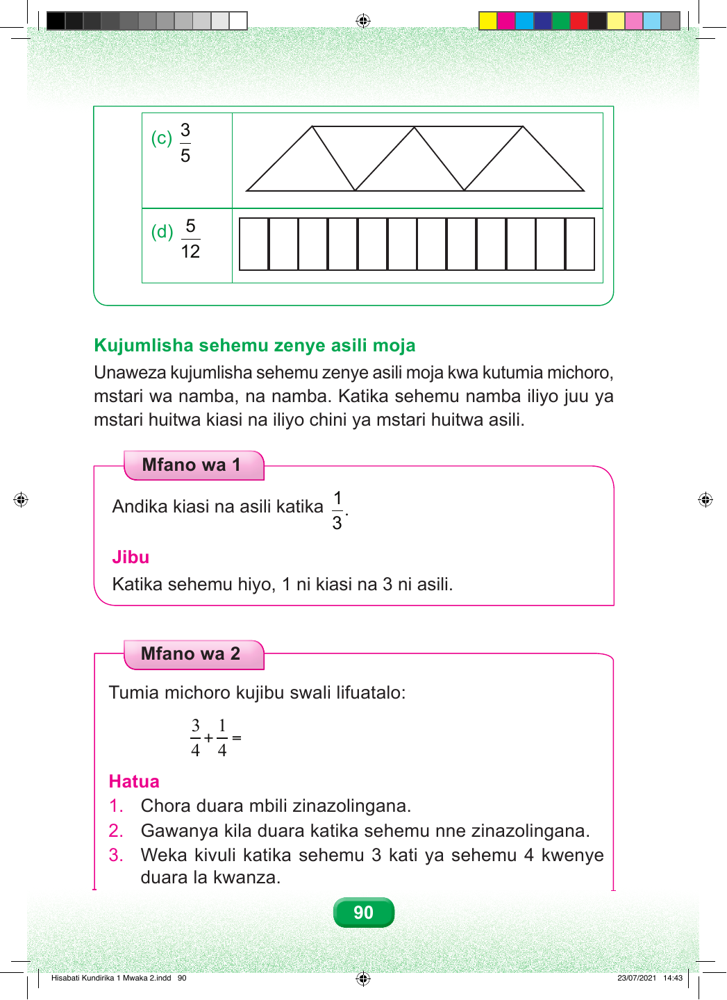

3 (c) 5 5 (d) 12 Kujumlisha sehemu zenye asili moja Unaweza kujumlisha sehemu zenye asili moja kwa kutumia michoro, mstari wa namba, na namba. Katika sehemu namba iliyo juu ya mstari huitwa kiasi na iliyo chini ya mstari huitwa asili. Mfano wa 1 1 Andika kiasi na asili katika . 3 Jibu Katika sehemu hiyo, 1 ni kiasi na 3 ni asili. Mfano wa 2 Tumia michoro kujibu swali lifuatalo: 3 1 + = 4 4 Hatua 1. Chora duara mbili zinazolingana. 2. Gawanya kila duara katika sehemu nne zinazolingana. 3. Weka kivuli katika sehemu 3 kati ya sehemu 4 kwenye duara la kwanza. 90 Hisabati Kundirika 1 Mwaka 2.indd 90 23/07/2021 14:43